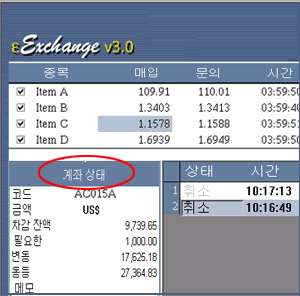
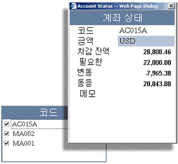

계좌
현황
거래/결재 플랫폼이 모든 거래활동을 추적, 투자가가 실시간으로 계좌의 자금 현황를 확인하게끔 해 준다.
단일 거래 계좌 사용자는 주 스크린 왼쪽 하단부에 있는 현황을 이용할 수 있다.

|
계좌 현황 지역은, 사용자가 다수 거래 계좌들을 가지고 있을 경우, 계좌들 리스트로, 사용자는 리스트에 있는 계좌 코드를 마우스로 두 번 클릭함으로써 어떤 계좌의 자금 현황를 알 수 있다.
|
 |
|
다수 거래계좌를 위한 계좌 현황
|